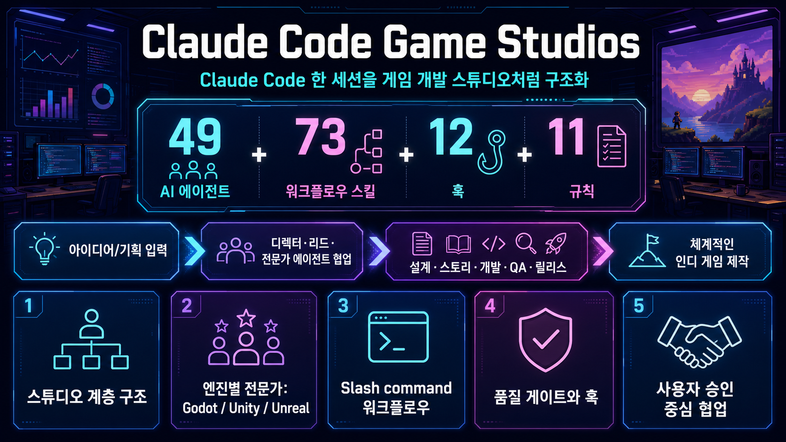

Claude Code Game Studios는 한 명의 Claude Code 세션을 49개 전문 에이전트, 73개 워크플로우 스킬, 훅·규칙·템플릿으로 구성된 “게임 개발 스튜디오”처럼 쓰게 해주는 Claude Code용 템플릿입니다.

“Claude Code 안에 디렉터·리드·전문가·QA·릴리스 담당이 있는 가상 게임 스튜디오 운영 규칙을 설치하는 템플릿”입니다.
한 명의 범용 챗봇이 아니라 creative director, technical director, producer, 각 분야 specialist로 나눠 생각하게 합니다.
/start, /brainstorm, /design-system, /create-stories, /dev-story, /qa-plan, /launch-checklist 등 단계별 워크플로우가 있습니다.
세 주요 엔진에 대한 specialist와 엔진 레퍼런스 문서를 포함해 프로젝트 선택에 맞춰 활용할 수 있습니다.
커밋, 푸시, 에셋 변경, 세션 시작/종료 등에서 훅이 실행되어 위험 작업과 누락을 줄입니다.
README가 강조하듯 자동 조종이 아니라 질문 → 옵션 → 결정 → 초안 → 승인 구조로 사용자의 결정을 남겨둡니다.
템플릿이므로 에이전트, 스킬, 규칙, 리뷰 강도, 엔진 구성을 프로젝트에 맞게 바꿔 쓰는 방식입니다.
문서, 역할 정의, 프로세스, 체크리스트가 많아 AI로 게임 프로젝트를 장기 운영할 때 흐트러짐을 줄이는 데 초점이 있습니다.
게임 엔진 플러그인이나 완성된 게임 프레임워크가 아닙니다. Claude Code 사용 방식, 팀 역할, 산출물 관리 규칙을 받아들이는 비용이 있습니다.
인디 게임을 Claude Code와 함께 만들며 기획서, 스토리, 구현, QA, 릴리스 흐름을 체계화하고 싶은 경우.
내 프로젝트에서 너무 무거운 프로세스가 되지 않는지, 필요한 에이전트/스킬만 남겨도 품질이 유지되는지 작은 기능 하나로 실험하세요.
단순 코드 생성이나 빠른 프로토타입만 원한다면 49개 역할 체계가 과할 수 있습니다. 이 경우 일부 스킬만 추려 쓰는 편이 낫습니다.
수집 근거: GitHub API, README/CLAUDE.md, .claude 구조, settings.json, pygount 요약. 상세 코드 리뷰가 아니라 빠른 도입 판단용 요약입니다.
기존 프로젝트에 바로 덮기보다 별도 브랜치/샘플에서 /start와 /setup-engine 흐름을 확인합니다.
프로젝트 규모에 맞게 에이전트·스킬·리뷰 강도를 줄여 과한 프로세스를 방지합니다.
기획 → 스토리 → 구현 → QA → 완료 체크까지 한 루프를 돌려 실사용성을 판단합니다.